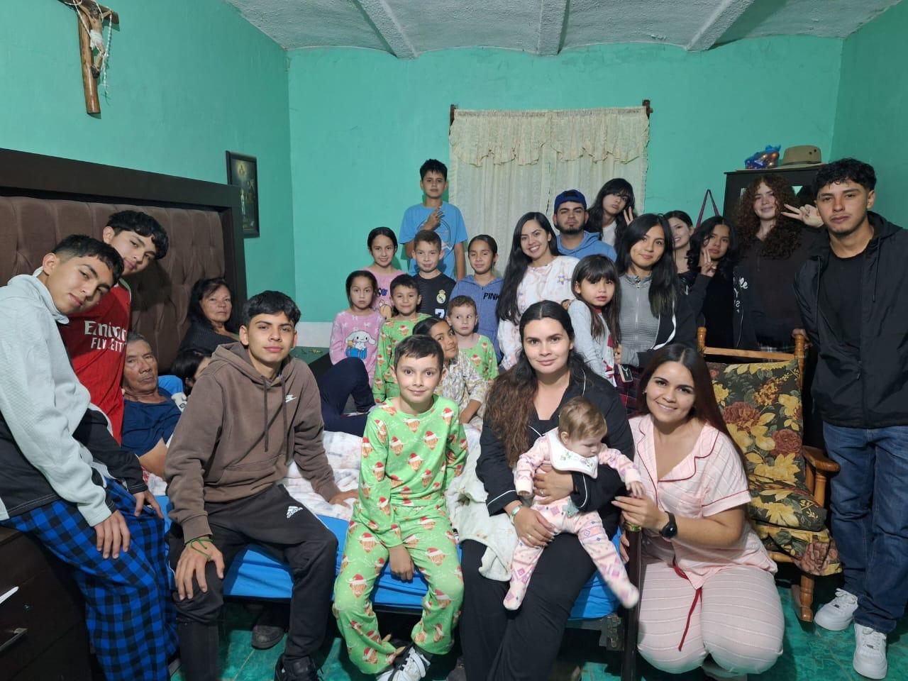

Hola, soy Justin Hernández
Bienvenido a mi página web personal.
Soy estudiante de Desarrollo de Software Multiplataforma de la Universidad Tecnológica de León.
Nací en León, Gto. pero me críe en Guadalupe de Jalpa y actualmente estudio y continúo aprendiendo diferentes temas relacionados con la tecnología y la programación.
Algunas de las cosas que más me gustan son jugar con mi perrita, los videojuegos, escuchar música, ver películas y pasar tiempo con mi familia.
Uno de mis objetivos es seguir aprendiendo y mejorar mis conocimientos para poder desarrollar mis propios proyectos.
Mi biografía
Mi nombre es Justin Hernández Lara. Actualmente estudio Desarrollo de Software Multiplataforma. Durante mi formación he aprendido diferentes herramientas y lenguajes de programación como lo son Java, PseInt y CSS.
Desde pequeño siempre me han gustado los juegos donde utilizo la estratega y la logica para poder ganar, como lo es el ajedrez, el uno el monopoli, entre otros. Esto me llevó a interesarme por la programación y la tecnología.
Me interesa la tecnología porque me gusta conocer cómo funcionan las aplicaciones y los programas que utilizamos todos los días.
En mi tiempo libre disfruto realizar diferentes actividades, especialmente aquellas que puedo compartir con las personas que son importantes para mí.
Mi familia
Mi familia es una parte importante de mi vida. Me gusta pasar tiempo con ellos y compartir diferentes momentos.

Datos personales
Nombre: Justin Hernández Lara
Carrera: Desarrollo de Software Multiplataforma
Universidad: Universidad Tecnológica de León
Interés: Desarrollo de software y fundamentos de IA
Para conocer mis hobbies visita la siguiente página: